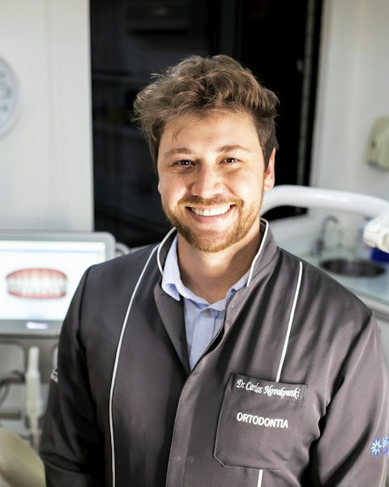
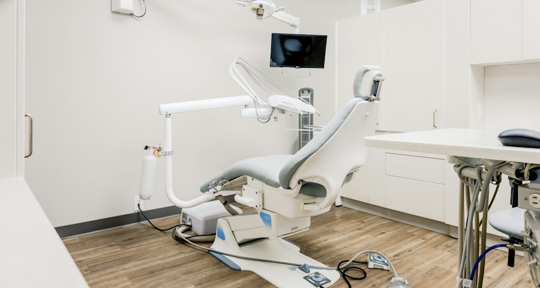

GP appointments
Same-week appointments for new symptoms, ongoing conditions, fit notes and referrals — in person or by video.
Learn moreIndependent GP, dental & pharmacy care
Same-week appointments with clinicians who listen, explain and follow up. Two calm London studios, open seven days, with clear prices before you book.
What can we help with today?
Our services
From a nagging cough to a dental check-up or a vaccine before you travel — book the right clinician directly, without the runaround.
Same-week appointments for new symptoms, ongoing conditions, fit notes and referrals — in person or by video.
Learn moreCheck-ups, hygiene visits and treatment planning with a calm, unhurried team who explain every step.
Learn moreSpeak to a prescribing pharmacist about everyday conditions, repeat medicines and medication reviews.
Learn moreContraception, menopause, period and fertility conversations with clinicians who give you time.
Learn moreQuick, gentle blood tests and health checks, with results explained by a clinician — not just emailed.
Learn morePersonal travel risk assessments, vaccines and antimalarial advice, planned around your itinerary.
Learn moreWhy Aster Care
How it works
Pick a service and a clinician — or let us match you with the first available. Prices are shown up front.
Early mornings, evenings and weekends. In person at either studio, or by secure video where appropriate.
A written summary of what was discussed, and a clinician who follows up on tests and referrals.
Our clinicians
Experienced GPs, dentists, pharmacists and nurses who know each other — and, over time, you.
GP · Clinical lead
Fifteen years in general practice, with a special interest in long-term conditions and preventive care.
Harbour Studio
Mon · Tue · Wed · Thu · SatDentist
Known for putting nervous patients at ease. Focuses on prevention and conservative treatment.
Harbour StudioPharmacist prescriber
Independent prescriber who runs our medication reviews and minor-illness clinics.
Garden RoomsGP · Women’s health
Leads our menopause and contraception service, with a practical, evidence-led approach.
Garden RoomsPatient stories
Illustrative stories for this concept site — the kind of feedback a practice like this sets out to earn.
“I was in and out with a plan in twenty minutes, and the GP actually called the next day to explain my results.”
“I had avoided dentists for years. Dr Hart talked me through everything and I genuinely did not mind going back.”
“Booking a Sunday travel appointment the week before my trip was a lifesaver. Clear prices, no surprises.”
Locations
Both studios are step-free, with accessible toilets and quiet waiting areas. Today’s hours are highlighted.

Harbourside| Monday | 08:00 – 19:00 |
|---|---|
| Tuesday | 08:00 – 19:00 |
| Wednesday | 08:00 – 19:00 |
| Thursday | 08:00 – 19:00 |
| Friday | 08:00 – 19:00 |
| Saturday | 09:00 – 14:00 |
| Sunday | Closed |
| Monday | 08:30 – 18:00 |
|---|---|
| Tuesday | 08:30 – 18:00 |
| Wednesday | 08:30 – 18:00 |
| Thursday | 08:30 – 18:00 |
| Friday | 08:30 – 18:00 |
| Saturday | 10:00 – 16:00 |
| Sunday | 10:00 – 14:00 |
Questions
Can’t find what you need? Call us on 020 7946 0123 or send a message.
No. Anyone can book a one-off appointment. If you would like ongoing care with us, we will set up a patient record at your first visit.
A standard 20-minute GP appointment is £79, and every other fee is listed in our price list. You will always see the price before you confirm.
Yes — we work with most major UK insurers. Bring your membership number and any pre-authorisation code, and we will bill your insurer directly where possible.
GP and pharmacy consultations can usually be held by secure video. If your clinician feels you need to be examined, we will arrange an in-person follow-up at no extra charge.
Cancel or move your appointment free of charge up to 24 hours beforehand, using the link in your confirmation email or by calling us.
Book a visit
Book online in under two minutes, or call and we will find a time together. Same-week GP appointments, most weeks of the year.